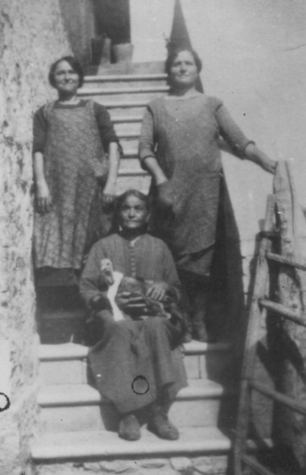

Quercegrossa (Ricordi e memorie)
CAPITOLO II - FAMIGLIE DEL '900
Indice dei Capitoli
Indice Famiglie del '900
BIANCIARDI ADAMO (1922-1963); Poggiagrilli/Macialla; da S. Agnese.
Famiglia di coloni originaria di Castellina in Chianti. Vennero dal podere Masseto, vicino S. Agnese sulla strada per Poggibonsi, dove dimoravano dal 1905, e presero possesso del nuovo podere di Poggiagrilli nel marzo 1922. Era tanto nuovo che ancora non ne era stata completata la costruzione, e i Bianciardi alloggiarono per alcuni mesi nella fattoria di Petroio, dei Pallini, in attesa di trasferirvisi. Giunsero in dieci, col capoccio Cesare Giuseppe, ma conosciuto come Giuseppe. Era nato il 31 aprile del 1859 a Castellina in Chianti, da Lorenzo e Piazzini Teresa, ed ora aveva 63 anni. La moglie Palmira Ermini era di Greve, nata nel 1865. Il figlio Adamo (1889) era coniugato con Elina Nencioni (1892), figlia di Serafino, mugnaio a Caspiano. Hanno tre figli: Lorenzo (1913), Primetta (1915) e Teresa (1919). Completano la famiglia Luigi, fratello del capoccio, celibe di 53 anni, e l'altro figlio di Giuseppe, Mariano, con la moglie Rosa Ermini di Barberino d'Elsa.
Bianciardi a Poggiagrilli: Adamo, Teresa, zi’ Rosa, Nella e Maria.
Preso possesso del podere, la famiglia condurrà un'esistenza normale, simile a tutte le altre con tempi scanditi dai soliti eventi familiari. Dal 1922 al 1928 Adamo e Elina mettono al mondo Camillo nel 1922, un mese dopo il loro arrivo a Petroio, Giuseppe nel 1925 e Maria nel 1928. L’anziano Giuseppe era nel frattempo deceduto a causa di un tumore nell'anno 1924 e nel 1928 morì anche il fratello Luigi. Adamo prese il comando della famiglia. Per quanto riguarda Mariano si registrò nel 1922 la morte di Nello, un piccolo di un mese, e il 24 ottobre 1923 la nascita di Nella.

Poggiagrilli, donne di casa Bianciardi: Elina, Rosa e la nonna Ermini Palmira
Quattordici anni più tardi, e siamo nel 1935, abbiamo Adamo capoccio di una famiglia numerosa di tredici componenti: alle nascite si è aggiunto Pietro Ermini, fratello della nonna Palmira. Ma tre anni dopo l'anziana vedova di Giuseppe lascerà questo mondo all'età di 73 anni. Negli anni anteguerra inizia la sequenza dei matrimoni che, con l'eccezione di Camillo e Giuseppe rimasti celibi, sistemeranno tutti gli altri giovani di casa Bianciardi. Incominciò il 22 aprile del 1937 Primetta, che prese Giulio dei Fosi di Belvederino. A seguire Teresa, che in tempo di guerra sposò Vasco Volpini il 15 febbraio 1941. Nel dopoguerra prese moglie Lorenzo, sposo nel 1947 di Rosina dei Lorenzini di Belvederino, e Nella di Mariano si maritò con un Rocchigiani delle Tolfe. Chiuse la lista Maria che nel 1951 sposò Duilio Pagliantini, allora dimorante a Fagnano. A tutti questi eventi matrimoniali si alternarono la morte di Adamo e le nascite dei figli di Lorenzo: Sergio, Lucia, Rita e Luigi. La famiglia così sostanzialmente modificata tenne il podere di Poggiagrilli fino al marzo del 1962. A quella data si divisero: Lorenzo e Camillo si trasferirono a Macialla al posto dei Giulianini, mentre Mariano con Rosa tornarono al Poggio di Vagliagli. Giuseppe detto “Beppe” abitava già da tempo nelle case dei Mencherini, forse dal 1950 quando aveva lasciato i campi per una nuova occupazione. A Macialla mantennero ancora il contratto di mezzadria, ma per un anno soltanto. Infatti, nel marzo 1963 abbandonarono la secolare condizione di coloni e si inurbarono prima a Poggibonsi e anni dopo a Siena.
BIANCIARDI CESARE (1917 - 1937/39); bracciante; Gallozzole/Quercegrossa.
Bracciante, nato a Siena nel 1884, Cesare Bianciardi fu Giuseppe fu Paolo, detto “il ceco del Berni”, abitò con la moglie Maria Vannoni e per breve tempo con il figlio Lorenzo due stanze nell'angolo del palazzo di Giotto dove poi si insedierà la Cooperativa: cucina e camera, con la porta di ingresso dalla piazzetta del pozzo. Facevano parte del popolo di Quercegrossa fin dal maggio del 1917 quando erano tornati alle Gallozzole dal podere La Vigna di S. Petronilla. Allora era ancora in vita Giuseppe (1842), il babbo di Cesare. Dalle Gallozzole avevano poi preso dimora a Quercegrossa il 4 maggio 1929 e l'unico ricordo che rimane di loro è: "Maria era la moglie, lui pigliava le sbornie e noi ragazzi si andava a guardare". Dopo la malattia e morte della moglie al Manicomio di Siena, Cesare sparì per sempre da Quercegrossa. I nomi di famiglia Lorenzo e Cesare riscontrabili anche tra i Bianciardi di Poggiagrilli potrebbero far pensare a una parentela, ma è decisamente da escludere.
BIANCIARDI FERDINANDO (1916-1918); mezzadri; Olmicino.
Si può fissare dal febbraio 1916, data di partenza dei Burresi, ai primi del 1918 quando entrano i Branconi, la breve permanenza di un’altra famiglia Bianciardi al podere
S. Elena dell’Olmicino. Il solo dato che possediamo è la morte del capoccio Ferdinando avvenuta il 9 novembre 1917 all’età di 65 anni. Il 23 aprile 1913 un Pietro Bianciardi di Ferdinando, proveniente da Lilliano, aveva sposato nella nostra chiesa una Simoncini di Poggiobenichi.
BIANCIARDI GIUSEPPE (1927-1927); minatori; Leccino Nuovo; da Chiusdino.
Un bracciante o probabilmente uno dei tanti minatori che venivano assunti alle miniere di Lilliano, Giuseppe del fu Costantino Bianciardi alloggiò al Leccino Nuovo dal 15 febbraio al 16 agosto 1927. Proveniva da Chiusdino ed erano tre in famiglia, due uomini e una donna. Sei mesi e poi migrarono a Siena.
Inizio pagina
Indice famiglie del '900
Indice dei Capitoli
|